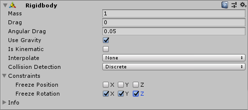

Physics¶
This asset utilizes Unity's built-in 3D physics.
You can add the regular Rigidbody & Collider components to your GameObject.
Rigidbody¶
When adding the Rigidbody component make sure to check the freeze rotation checkboxes in the inspector view.

You may also set these values from script
1 2 3 4 5 | public void fooBar() { var rigidbody = gameObject.GetComponent<Rigidbody>(); rigidbody.freezeRotation = true; } |
for more information visit the official Unity documentation
Colliders¶
You can add any of the Unity 3D colliders to your GameObject. When a collider component is added Unity will set its size to match the sprite's bounds which most likely will be incorrect. Make sure to set the colliders size to the desired volume.